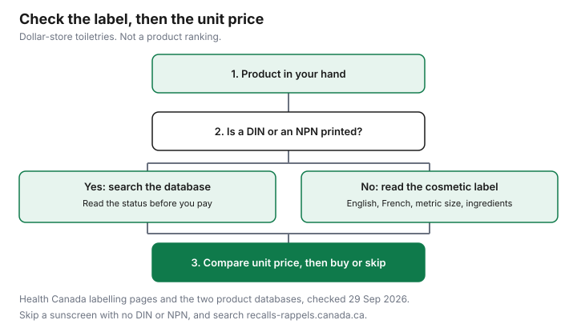

Personal Care · Canada
Toiletries Price Check: Costco vs Walmart vs Shoppers vs Dollarama, by Price per Use

The sticker on a toiletry is the price of a bottle, not the price of a wash. A 200 ml bottle at a low price can cost more per wash than a larger bottle with a higher sticker, and a club-size bottle can cost more than either one if half of it is thrown out. In one matched week of Toronto flyers, read on 13 Nov 2026, no store won every row: Walmart was cheaper per 100 ml on Dove body wash and Dove bar soap, Shoppers Drug Mart was cheaper on Dove shampoo and Crest Pro-Health mouthwash, and Costco’s two-bottle Dove body wash was the lowest per 100 ml of all, if you finish both bottles. This page is that dated four-item check plus the method for a 12-item basket at Costco, Walmart, Shoppers Drug Mart, and Dollarama. Dollarama had no weekly flyer listing to match, so its row stays blank. The shampoo table further down is still an example with illustrative inputs. Offer types are disclosed. This is not a ranking of stores.
Key takeaways
- Price per 100 ml is the price divided by the millilitres, times 100. Price per use divides by the uses you will finish, not by the uses printed on a bottle you will throw out.
- The basket is 12 product types, priced the same day, with the size written down. A blank cell is honest. A different product is not a substitute for a missing one.
- In the 13 Nov 2026 flyer check, four matched Dove and Crest items cost $39.65 at Walmart or $38.95 at Shoppers Drug Mart when bought at one store. Buying each item where it was cheaper per 100 ml cost $33.70.
- Shoppers won two of the four rows. Its 1.5 L Crest Pro-Health mouthwash at $8.99 was about $0.60 per 100 ml, against about $0.90 for Walmart’s 1 L bottle at $8.97.
- Points, a gift-card discount, and a portal rebate change the answer only after you convert them to dollars you will actually receive.
- A membership fee belongs in the math only if you would not hold the membership without this basket. That fee is covered on the household Costco guide, not restated here.
Why unit price per ml or per use beats sticker price
Two bottles are the same comparison only when they do the same job. Shampoo against shampoo can be priced per 100 ml.
A facial serum against a body wash cannot, because you do not use them in the same amounts. When the label states an amount per use, price per use is the better column: it is the price divided by the number of those uses you will take before the product is gone or discarded. The unit-price guide is the grocery version of this division, in kilograms and litres. The arithmetic here is the same. The aisle is not.
The millilitres are always there to divide by. Under the federal Consumer Packaging and Labelling Act, the label on a prepackaged non-food product must show its net quantity, in millilitres or litres for liquids and in grams or kilograms for solids, according to Competition Bureau Canada.
Write the formula down before you are standing in the aisle. Price per 100 ml equals price divided by millilitres, times 100. An example 400 ml bottle at $9.99 is $2.50 per 100 ml, because 9.99 divided by 400 is 0.024975, and 0.024975 times 100 is 2.4975, which rounds to $2.50. If that label said 5 ml a wash, the bottle holds 80 washes and the price per wash is about $0.12. Both results are an example with illustrative inputs. They are here so the division is visible. They are not a Costco price.
Method: a basket of 12 toiletries priced across retailers
Use one list for the household, not a different list in each store. These 12 types cover a typical bathroom without naming a brand: shampoo, conditioner, body wash, bar soap, toothpaste, deodorant, hand lotion, facial cleanser, facial moisturiser, sunscreen, a shave cream or gel, and menstrual pads or tampons if the household buys them. If you do not buy one type, drop that row. Do not add a 13th type in one store only and then declare a winner.
On one day, record the date, whether you are in a stated store or on that retailer’s site, the size in ml or grams, and the price you would pay. Leave a cell blank when the store does not sell that type in a size you would use. Do not copy a travel bottle into a family-size row. Sunscreen has its own label rules on the sunscreen guide. A facial moisturiser is not that product unless the bottle shows an SPF you are willing to use as the sunscreen step. The household comparison is paper and cleaner, not this basket.
Costco is only in the basket if you can shop there. If you would not pay for a membership except to buy these 12 items, the fee has to be spread across what you will buy before the renewal. If you already hold a membership for groceries, do not add the fee again to shampoo. The dollar amount of the fee is on the Costco household guide. It is not repeated here.
What did the same toiletries cost at Walmart, Shoppers and Costco this week?
On 13 Nov 2026, the Walmart flyer (valid 12 to 18 Nov 2026), the Shoppers Drug Mart flyer (valid 14 to 19 Nov 2026) and the Costco flyer (valid to 22 Nov 2026) for a Toronto postal code all listed the same Dove or Crest product in matching sizes. Walmart won two rows, Shoppers won two, and Costco’s club pack was the lowest per 100 ml on the one row it carried.
| Item | Walmart | Shoppers Drug Mart | Costco | Cheaper row |
|---|---|---|---|---|
| Dove body wash | 591 ml, $8.86 ($1.50) | 591 ml, $10.99 ($1.86) | 2 × 905 ml, $12.99 after $4.50 off ($0.72) | Costco, if you finish both bottles; otherwise Walmart |
| Dove shampoo or conditioner | 530 ml, $8.47 ($1.60) | 530 ml, $6.99 ($1.32) | Not in the flyer | Shoppers |
| Dove bar soap, 106 g bars | 6 bars, $8.86 ($1.48 a bar) | 3 bars, $5.99 ($2.00 a bar) | Not in the flyer | Walmart |
| Crest Pro-Health mouthwash | 1 L, $8.97 ($0.90) | 1.5 L, $8.99 ($0.60) | Not in the flyer | Shoppers |
Bought at one store, the four items cost $39.65 at Walmart, counting the mouthwash per 1.5 L as 1.5 times $8.97, or $38.95 at Shoppers, counting two three-packs of soap. Buying body wash and soap at Walmart and shampoo and mouthwash at Shoppers cost $33.70, about $5 to $6 less. The bar soap row is the sticker trap: the Shoppers three-pack has the lower sticker and the higher price per bar.
The Costco row passes only the bulk test below. If one of the two 905 ml bottles goes unused, the $12.99 paid for 905 ml works out to about $1.44 per 100 ml, barely under Walmart’s $1.50. Shoppers’ flyer also lists a 20,000-point PC Optimum offer on 18 and 19 Nov 2026, which it calls a $20 value, with conditions in the flyer. Subtract only points you will redeem.
Where each retailer usually wins
One matched week is not a pattern, so this section still cannot say who usually wins. What it can say is how to read a win after you fill the sheet.
The winner on a row is the lowest price per 100 ml, or per use, after two subtractions: dollars of points or rebates you will actually receive, and millilitres you expect to discard. A store can win one row and lose the next. A basket total is the sum of the winning cells you will buy, not a slogan about a banner.
Test these patterns with your own numbers. A large size wins only when you finish it. A small bottle can have the lowest sticker and the highest price per 100 ml. A drugstore row can win in a week when you redeem points and lose the next week when you do not. A dollar-store size can win when you only need the small amount and the per-ml math still beats the larger bottles. None of those sentences is a store-wide finding; the dated table above is one week. They are the questions the blank cells are for. The chart uses one example shampoo so the four bars have heights.
| Retailer | Size | Price | Per 100 ml |
|---|---|---|---|
| Costco, example | 400 ml | $9.99 | $2.50 |
| Walmart, example | 350 ml | $6.48 | $1.85 |
| Shoppers, example | 300 ml | $8.99 | $3.00 |
| Dollarama, example | 200 ml | $4.00 | $2.00 |
| Your Costco | |||
| Your Walmart | |||
| Your Shoppers | |||
| Your Dollarama |
Points and sale cycles that change the answer
A point is not a discount until you know what the program pays when you redeem it. Shoppers Drug Mart purchases can earn PC Optimum points.
The earn rate and the redemption value change, and this guide does not cite either number. Use the PC Optimum guide for the rule that applies on the day you shop, subtract only the dollars you will redeem, and then divide. Points you let expire are not a discount. A bonus event you miss is not a discount.
The example with illustrative inputs values 1,000 points at $1, which is not a PC Optimum rate. Two thousand points would be $2 off the example $8.99 Shoppers bottle, leaving $6.99. Divided by 300 ml, that is $2.33 per 100 ml. It still loses to the example Walmart row at $1.85. Your points may reverse that. They may not. A flyer price is a date, not a personality of the store. The Flipp guide is how to read a household flyer. Write the end date of the offer on the row.
A discounted retailer gift card is an offer type, not a secret unit price. If you buy $100 of store credit for $95, the 5 percent is an illustrative example of the arithmetic, not a live offer. Spread the dollars you saved across the purchases you will make with that card before you claim it on one bottle. A cash-back portal is the same kind of adjustment: record the rate the portal shows that day, after any category it excludes, and ignore a rate you saw last month.
| Offer | What to write down | Worked effect on the example Shoppers bottle |
|---|---|---|
| Points you will redeem | Dollar value from the program’s own rule, not a guess | Example $2 off $8.99 leaves $6.99, or $2.33 per 100 ml on 300 ml |
| Flyer or bonus week | End date, and the price only if you will shop before it | Leave this cell for the week you shop |
| Gift card bought at a discount | Dollars saved, spread over what the card will buy | Do not assign the whole discount to one bottle |
| Cash-back portal | The rate shown today, after exclusions | Record yours before you divide |
Bulk buying vs shelf life and storage
The denominator is what you will use. If a package prints an expiry date or a period-after-opening mark, that printed limit is the one you plan against.
This guide does not cite a regulation that sets a number of months for an opened shampoo, so it does not invent one. Heat, a shared bathroom, and a household that travels can make a club size the expensive option. Millilitres still in the bottle after you stop using it are a cost.
Redo the example. The example 400 ml bottle at $9.99 is $2.50 per 100 ml only if you use all 400 ml. If you use 200 ml and discard the rest, the price of what you used is $9.99 for 200 ml, or $5.00 per 100 ml, which loses to every other example row in the table. That is the bulk test. Storage is the same test in a different room: a bottle kept in a hot car or a damp shower is not the bottle the price assumed.
A printable price-book template
The blank rows are the template. Print this page or copy the columns into a note: date, place, product type, size, price, price per 100 ml or per use, dollars of points or rebates you will receive, and millilitres you expect to discard.
One row per retailer. Fill it the day you shop, not from memory a week later. The drugstore routine guide is what to do with the cleanser, moisturiser, and sunscreen rows after you know the price. It is not a second price check.

Dollar-store toiletries: sizes, safety labels, good buys and skips
This section was merged from our former guide “Dollar-Store Toiletries in Canada: What's a Bargain and What to Skip” (last updated 29 Sep 2026). Figures keep their original checked dates.
Sizes and shrinkflation
Shrinkflation here is a smaller net quantity in a package that still looks familiar. Cosmetic labels must state net quantity in metric units, in English and French, under the labelling pages as of 29 Sep 2026.
That line is the defence. Read 75 mL as 75 mL even when the bottle is as tall as last year’s 100 mL. Do not compare bottle height, cap colour, or the word “bonus” without a number. If a package says “2 bars” or a count, use the count, and still read any gram weight beside it.
Travel sizes are a special case of the same trick. A 30 mL bottle at a low sticker can be a miserable price per 100 mL and still be the right buy if you need a container at or under 100 mL for a flight and you would otherwise buy a mini at a higher rate. The carry-on limit is the CATSA liquids guide. Do not buy a strip of minis you will not use just because each sticker is small. Three unused minis are three purchases.
Safety: DIN/NPN and labels
Sort the product before you sort the price. If the package prints a DIN, search Health Canada’s Drug Product Database and read the status.
The search page, as of 29 Sep 2026, lets you search by DIN, by product name, or by active ingredient, and the status list includes marketed, dormant, and several cancelled states. A cancelled record is not a green light because the bottle is in your hand. If the package prints an NPN, search the Licensed Natural Health Products Database. That page distinguishes licence status from market status. Market status is voluntary. A licence that is suspended, cancelled, or under a stop sale cannot legally be sold in Canada, in the words on that page. A “not marketed” flag does not, by itself, mean a sale is illegal, because the page says market notification is voluntary.
If there is no DIN and no NPN, treat it as a cosmetic unless the claims say otherwise. Health Canada’s advertising page says you should doubt a therapeutic claim, one that suggests the product treats or prevents a disease or changes a body function, when no DIN or NPN is printed. Those claims are for drugs and natural health products, not for cosmetics. The cosmetic label still has to show the ingredient list in INCI names, the identity in English and French, the metric quantity, dealer contact information, warnings, and directions for safe use. “Hypoallergenic” is not a legal or scientific term on that page. It does not mean nobody will react. Read the ingredients if you already know what bothers you. The dupes and counterfeits guide is the separate problem of a product that is not what the label claims to be.
Good buys: basics, travel items
Basics are the rows where the comparison is size and the ingredient list, not a drug claim: a bar of soap by the gram, a simple wash by the millilitre, cotton rounds by the count. Buy the one with the lower unit price that you will finish, after you have read the label.
Travel items are the rows where a small metric size is the point, because you need it to fit a rule or a bag, not because the per-millilitre price is kind. A spare toothbrush, a small soap, or a 50 mL bottle you will actually bring can be a sensible dollar-store buy when the label is intact and the unit price is not absurd next to decanting a bottle you already own. This is not a list of named products to grab. It is a description of the rows worth running the math on.
Walk past a display that mixes those basics with products that need a number. A low sticker on a toothpaste that promises to treat a condition, with no DIN or NPN, fails the therapeutic-claim check before it earns a unit-price check. A toothpaste sold as a cosmetic, with an ingredient list and no treatment claim, can go through the unit-price check like soap. If you want a fluoride product because a dentist told you to use one, you are in the numbered-product check, and the dollar store does not get a special pass. Confirm the number. This is not dental advice.
Skip: sunscreen without clear labelling, electronics
Sunscreen is the clearest skip. Health Canada says every sunscreen approved for sale in Canada has a DIN or an NPN, and that all sunscreens have expiry dates.
An expired sunscreen may be less effective. A bottle with no number, or no date you can read, does not pass that page. Do not buy it because the sticker is low and the season is short. The sunscreen guide is the price-per-millilitre version once a bottle has the number and the date. Broad-spectrum and SPF 30 or higher are the use instructions on Health Canada’s page, not a ranking of stores.
Electronics in the same aisle, a USB light, a cheap trimmer, a charger in a basket by the toothpaste, are not cosmetics and not sunscreens. This guide does not cite a safety standard, a failure rate, or a test for them. Do not let a toiletry method bless a device. Search the recall site before you rely on any bargain, toiletry or not. Recalls and safety alerts at recalls-rappels.canada.ca, as of 29 Sep 2026, is the public search, and the page details say it was modified 2026-09-29. Report a product that hurts you. A recall list changes. A homepage photo of other people’s recalls is not a clearance of the bottle in your basket.
| Category | Check | Lean |
|---|---|---|
| Soap, wash, cotton | Metric size or count, ingredient list, price per 100 g or 100 mL | Buy when you will finish the winner of that division |
| Travel size | Same unit price, plus whether you truly need the small container | Buy a size you will pack. Skip a strip of minis you will not open |
| Toothpaste and similar | Therapeutic claim needs a DIN or NPN. Otherwise read the cosmetic label | Look up the number. Do not call it safe because of the store |
| Sunscreen | DIN or NPN, and an expiry date | Skip if either is missing |
| Chargers, lights, other devices | Not a cosmetic-label decision. Search the recall site | Skip as a toiletry purchase |

Sources
- Walmart, Shoppers Drug Mart and Costco flyer listings for Toronto postal code M4C 1A1 on Flipp, read 13 Nov 2026: Walmart flyer valid 12 to 18 Nov 2026, Shoppers Drug Mart flyer valid 14 to 19 Nov 2026 (points offer 18 and 19 Nov), Costco flyer valid 26 Oct to 22 Nov 2026. Flyer prices for selected varieties; prices can differ by store and region.
- No weekly Dollarama flyer listing was found on Flipp for the same postal code on 13 Nov 2026, so no Dollarama price was recorded.
- Competition Bureau Canada, What must be on the label (prepackaged non-food consumer products), read 13 Nov 2026.
- Costco.ca, Walmart.ca, and Dollarama.com (en-CA homepage) were cited as of 29 Sep 2026. No matched toiletry price, size, or unit price was recorded from those pages.
- Shoppers Drug Mart’s site returned an access-denied page on 29 Sep 2026, so no Shoppers price was recorded.
- The shampoo prices, the 5 ml wash, the $1 per 1,000 points, and the 5 percent gift-card sketch are examples with illustrative inputs.
- Dollarama homepage, dollarama.com/en-CA, as of 29 Sep 2026. Store finder, careers, and customer-service links. No toiletry price and no price ceiling on that page.
- Health Canada, Labelling of cosmetics, and Cosmetic advertising, labelling and ingredients, as of 29 Sep 2026. Mandatory label elements. Therapeutic claims need a DIN or an NPN. Hypoallergenic is not a legal or scientific term.
- Health Canada, Drug Product Database search, as of 29 Sep 2026. Search by DIN, product name, or active ingredient. Status values include marketed, dormant, and cancelled states.
- Health Canada, Licensed Natural Health Products Database, as of 29 Sep 2026. Licence status is separate from voluntary market status. Suspended, cancelled, or stop-sale licences cannot legally be sold.
- Health Canada, Sunscreens, as of 29 Sep 2026. Approved sunscreens have a DIN or an NPN. All sunscreens have expiry dates. An expired sunscreen may be less effective.
- Recalls and safety alerts, recalls-rappels.canada.ca/en, as of 29 Sep 2026. Page modified 2026-09-29. Search and report tools. No toiletry recall is quoted from that day’s list.
Frequently asked questions
Where are toiletries cheapest in Canada?
No single store. In a 13 Nov 2026 check of Toronto flyers, Walmart was cheaper per 100 ml on Dove body wash and Dove bar soap, Shoppers Drug Mart was cheaper on Dove shampoo and Crest Pro-Health mouthwash, and Costco’s two-bottle Dove body wash was the lowest per 100 ml if you finish both bottles. The cheapest row is the one with the lowest price per 100 ml, or per use, after you subtract only the points you will redeem and after you ignore millilitres you will throw out.
Is Shoppers Drug Mart more expensive than Walmart for toiletries?
Not on every item. In the same November 2026 week, the Shoppers flyer had Dove body wash 591 ml at $10.99 against Walmart’s $8.86, but Dove shampoo 530 ml at $6.99 against $8.47, and Crest Pro-Health mouthwash at about $0.60 per 100 ml against about $0.90. Compare per 100 ml and write the flyer end date on the row.
How do I calculate price per use?
Divide the price you pay by the number of uses you will actually finish. A use is the amount the label tells you to use, not the whole bottle. In the example with illustrative inputs, a 400 ml bottle at $9.99 and an illustrative 5 ml wash is 80 washes, or about $0.12 a wash. Replace both numbers with the bottle in your hand.
Is Dollarama cheaper for toiletries?
A lower sticker is not a lower price per 100 ml. In the example with illustrative inputs, a $4.00 bottle of 200 ml is $2.00 per 100 ml, which beats the illustrative $3.00 Shoppers row and loses to the illustrative $1.85 Walmart row. Those dollars are not a Dollarama shelf price. Fill the blank row.
Do PC Optimum events make Shoppers cheaper?
Only after you turn the points into dollars with the program’s own redemption rule and subtract that amount before you divide. The example uses an illustrative value of $1 per 1,000 points, which is not a PC Optimum rate. The PC Optimum guide is where that rule lives. A bonus week you do not redeem does not change the price per 100 ml.
Is bulk buying worth it for toiletries?
Only for the amount you finish before the date or the symbol printed on the package. This guide does not cite a rule for how many months an opened bottle lasts, so it does not give you one. If you will discard half of a club-size bottle, put only the half you will use in the denominator. A smaller bottle can win once waste is in the math.
Are dollar-store toiletries worth buying?
Sometimes, after you divide the price by the metric size on the label. Dollarama’s public homepage, as of 29 Sep 2026, did not list toiletry prices, so this guide does not quote one. A low sticker on a small bottle can cost more per 100 mL than a larger bottle somewhere else. Buy when the unit price is lower and you will finish it, and skip when the label fails the checks below.
Is dollar-store toothpaste safe?
This page does not declare a toothpaste safe or unsafe because of the store that sold it. Doubt a therapeutic claim when no DIN or NPN is printed, and if a number is printed, search it and read the status. If it is sold as a cosmetic, read the ingredient list and the bilingual identity. A lower price is not a safety finding.
What should I skip at the dollar store?
Skip a sunscreen that does not show a DIN or an NPN, and skip one that does not show an expiry date. Health Canada says approved sunscreens carry one of those numbers and that all sunscreens have expiry dates. Skip a charger, a light, or another device you are treating as a toiletry: this guide does not cite a safety standard for it. Search recalls-rappels.canada.ca for the product in your hand.
How do I compare unit prices there?
Read the metric net quantity the cosmetic rules require, not the height of the bottle. Divide the price by the millilitres or grams, then multiply by 100 if you want a per-100 figure you can compare with a grocery shelf tag. Write both numbers down. A bottle that looks the same size as last year is shrinkflation when the metric figure got smaller.
Are dollar-store items regulated like other toiletries?
The banner does not create a second set of cosmetic rules on the pages as of 29 Sep 2026. A cosmetic still needs the label elements Health Canada lists, and a drug or natural health product still needs its DIN or NPN and a status you can look up. A product that fails those checks is not a bargain. It is a skip.
Researched and drafted with AI assistance and fact-checked against official Canadian sources. How we create content.
Note: Education only. This page does not name a best shampoo, deodorant, or store.